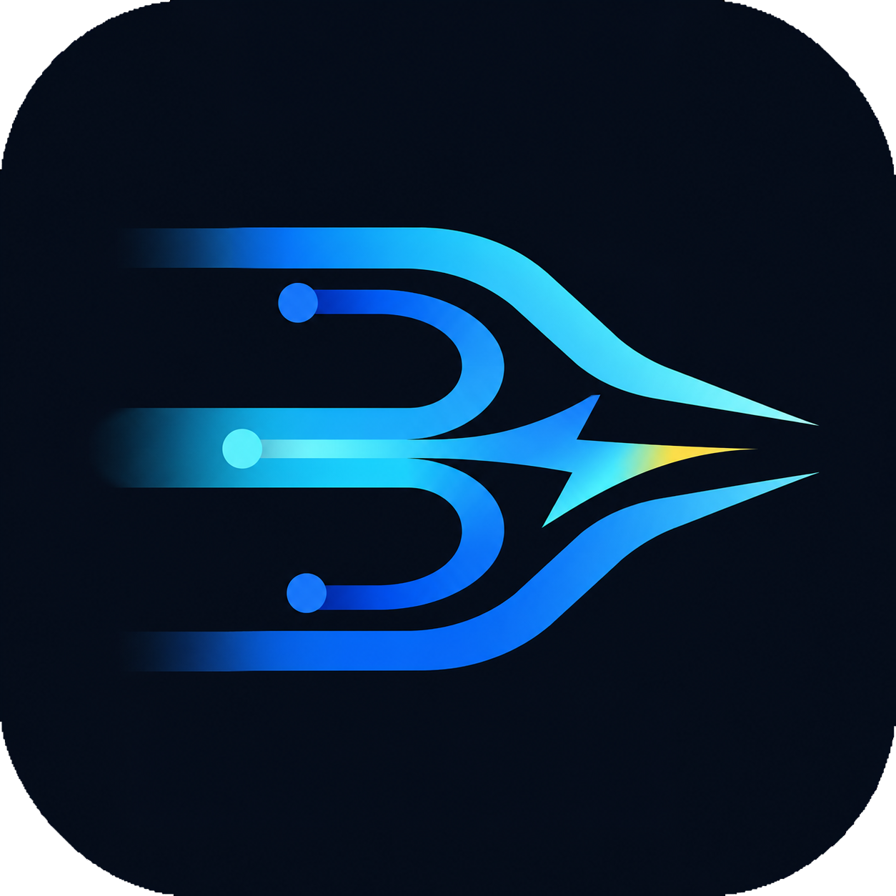
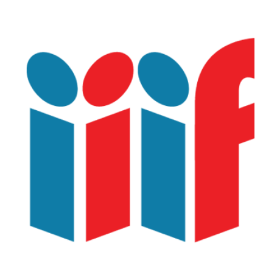

Years in software
</> Senior .NET Backend / Full-Stack Engineer
I build backend systems that have to keep working when the load and complexity grow.
My recent work is mostly C# and .NET: distributed services, messaging, real-time data, caching, identity, database-heavy systems, and reusable libraries. I also work with Angular when a feature crosses the UI.
.NET 8/9/10
Distributed Systems
Messaging
Real-Time
PostgreSQL / Redis
Open Source
Muscat, OmanOpen to remote roles and relocation
Current .NET targets
IIIF unit tests
Kafka msg/s on trading work
Started professionally
What I work on
Backend engineering is the main thread through my work, even when the product or domain changes.
Backend & Platform Design
ASP.NET Core, ABP, DDD, CQRS, modular monoliths, microservices, identity and shared platform libraries.
Messaging & Distributed Systems
Kafka, RabbitMQ, queues and pub/sub, Outbox/Inbox, service boundaries, retries, recovery and concurrency.
Real-Time & Performance
SignalR, WebTransport, WebSocket, Lightstreamer, profiling, benchmarks and low-allocation hot paths.
Data & Production Engineering
PostgreSQL, SQL Server, Redis, MongoDB, caching, OpenTelemetry, Docker, Kubernetes and CI/CD.
Current stack
C#.NET 8/9/10ASP.NET CoreABPEF CoreDapper
KafkaRabbitMQRedisPostgreSQLgRPCOpenTelemetry
Selected engineering work
The repositories I spend the most time on now.

ActiveThunderPropagator
A multi-repository .NET 8/9/10 streaming project split into channels, client protocol, shared building blocks, data-source adapters, cluster message buses, recovery handlers and client libraries.

NuGet / MITIIIF.Manifest.Serializer.Net
A version-aware .NET serializer for IIIF Presentation API 2.0, 2.1 and 3.0. The current codebase has 557 unit tests, 8 architecture tests, extension packages, version conversion and System.Text.Json interop.
Private
MinooTrading Platform
A .NET 10 modular business platform under MinooTradingSPC. It covers accounting, billing, IAM, audit, customer/product/order management, notifications, search, scheduling and reusable building blocks.
Experience
I started with desktop and database software and moved progressively into web, distributed and real-time systems.
Asl Al-Uroba · 2025-present
College-admission and postgraduate systems with ASP.NET Core/ABP, PostgreSQL, Redis and Angular. Current work also includes caching, identity, background processing and reusable internal .NET packages.
Creative Advanced Technologies · 2022-2024
EarthLink Iraq fibre-optic service systems, university software, vendor technical review and a .NET MAUI exam engine.
Alo Application · 2021-2022
Real-time stock trading with Kafka and Lightstreamer. The market-data pipeline handled more than 500,000 Kafka messages per second; parser hot paths were profiled and benchmarked separately.
Earlier work · 2003-2021
MVNO/telecom, insurance, retail/manufacturing, government tax services, travel software, RFID, DICOM and real-estate systems.
Technical writing
I write about things I've had to solve in .NET systems: concurrency, messaging, security and performance.
View all on Medium →I'm open to senior backend/platform roles, remote work, relocation and technical collaboration.
Based in Muscat, Oman (UTC+4).